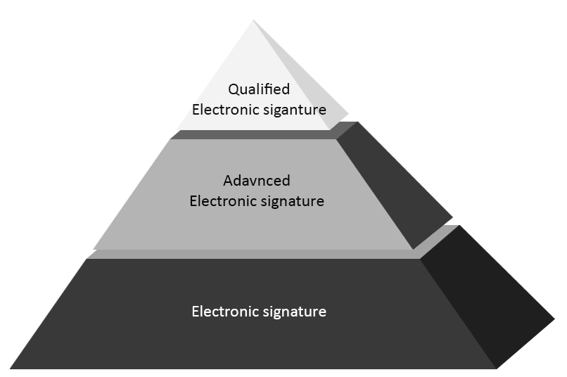

Electronic Signature
What is it about?
Nowadays when electronic documents are as popular as traditional, paper documents or even more popular, there is also need for a some kind of mechanism which will allow to verify the owner of the document. And here comes the an electronic signature. It provides the same legal standing as the handwritten signature, however it has got some requirements itself which have to be fullfilled.
Electronic signature is the technical correspondent of handwritten signature, it is used to provide authenticity of electonic documents. In many cases it is relised with the digital signature mechanisms. In short digital signature is the mathematical transformated data which is added to the document.
Signature common parts
The way of realisation of electronic signature varies in every country however there are four main common factors.
-
There is always a possibillity to indetify author connected with the signature itself.
-
There are no other people who have access to the signatory's private key.
-
There is always a possibility to identify the signature with signed data, in the case that noone has that data changed.
-
If someone has change the signed data the signature itself is also changed. That means signature plays on that case also a security role.
Legal part...
Legal documents regarding electronic signature were created by the Europen Union in the 1990s. Each country has got its own regulations regarding electronic signature. However there are few rules which are common for most of them.
We can distinguish three types of electronic sigantures which vary with a level of the security of the signature:
- Electronic signature - Signature which confirms the identity of the person who is signing the document.
- Advanced electronic signature - Signature which is strictly related with the signed document and the author. What is alsovery important is that thanks to the mathematical functions it is really hard to fake the signature itself.
- Qualified electronic signature - It is special kind of the advanced electronic signature wich has to fullfill ale the legal, technical and organizational requirements.
Person who wants to have this kind of signature must get from the Certificate Authority Office qualified certification and also private kay. From that office user is also getting cryptographic card with a private key stored.